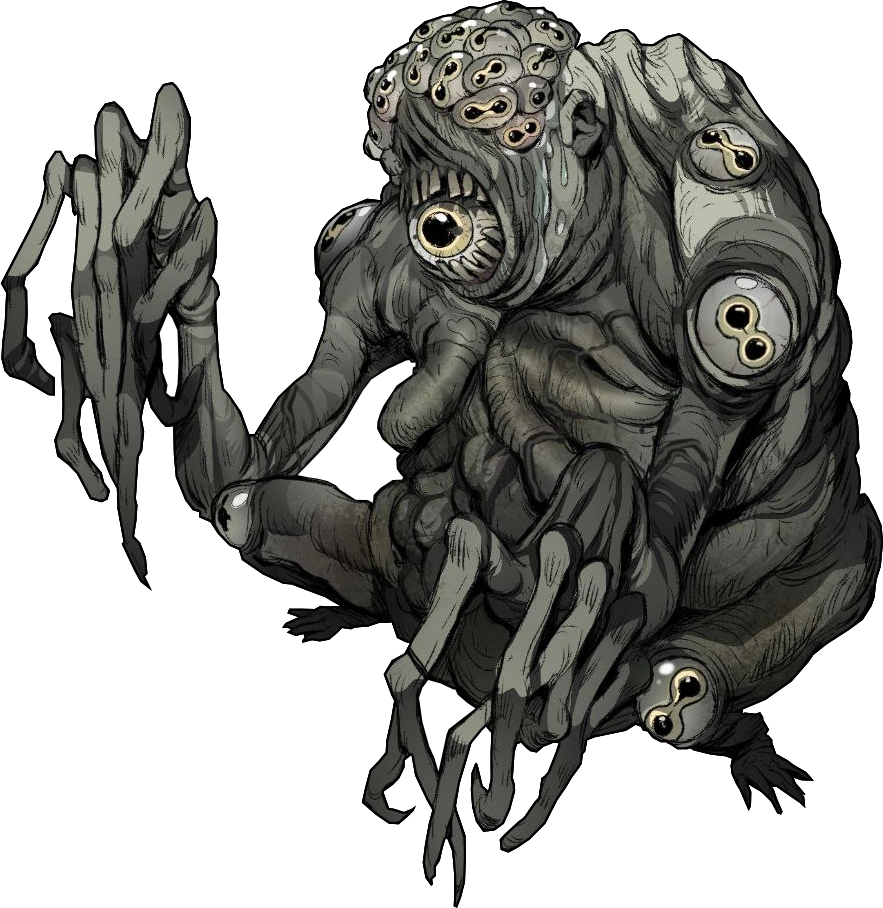

Ordem Paranormal é um universo ficcional e marca criada pelo streamer brasileiro Cellbit. Atualmente, sua ramificação principal são os episódios de RPG de mesa exibidos aos sábados, às 18 horas, no canal do Cellbit na Twitch.
Espreitador
O Espreitador é uma criatura paranormal de Conhecimento com complemento de Medo que se manifesta através de cantos escuros e frestas, observando aqueles marcados por ele enquanto presente nesses lugares.

Querido professor, entendi o que o P faz, porém, não achei um momento bom para coloca-lo em meu código